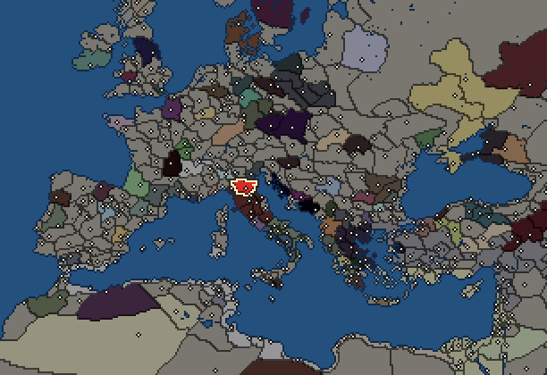
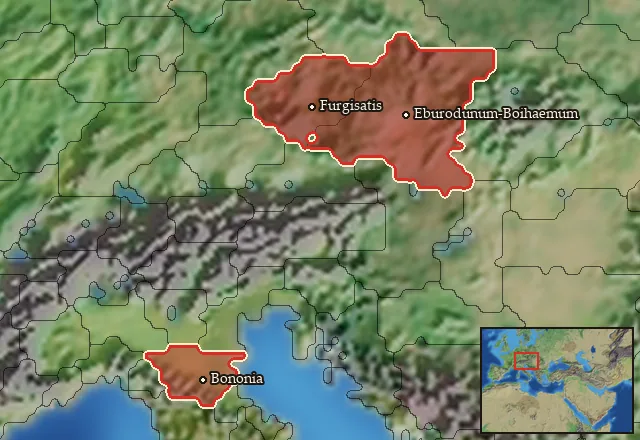

Cisalpine Boii


- difficulty Very Difficult
- Gallic culture
- believes
 Celtic
Celtic - 1 settlement
- capital Bononia
- 9,000 manpower
- 2 characters
- 20 faction units
- 430 regional units
Starting settlements
Cisalpine Boii begins with 1 settlement and 9,000 manpower.
What is already built in each settlement
Bononia, in Boiaea: Governor's Palace, Small Stone Wall, Grain Export Silos (Food trade), Homeland, Region Information Scroll, Paved Roads, Local Market, Shipwright, Pottery Kiln (Urban), Enclosures (Husbandry), Barracks and Armoury, Sewers (Sanitation)
Homeland
Cisalpine Boii's homeland is 3 regions. Only there can it install the Homeland government (more on homelands).

Starting characters
| Name | Role | Age | Name | Role | Age | ||||||
|---|---|---|---|---|---|---|---|---|---|---|---|
| Boiorix | General | 40 | Critosiros | General | 20 |
Starting diplomacy
Cisalpine Boii begins the campaign with no allies, no trade agreements and no wars.
Like every faction, it is also at war with the  Free Peoples, who hold every settlement no faction does.
Free Peoples, who hold every settlement no faction does.
Reforms
Open to every faction: Military innovations have arrived!, Second wave of military innovations have arrived!.
Units you can recruit
The same as in the main campaign.